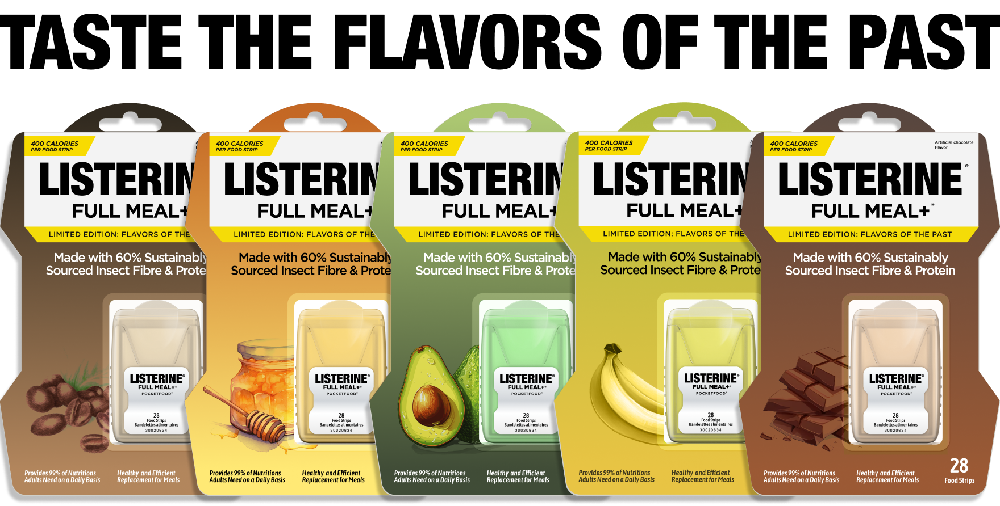
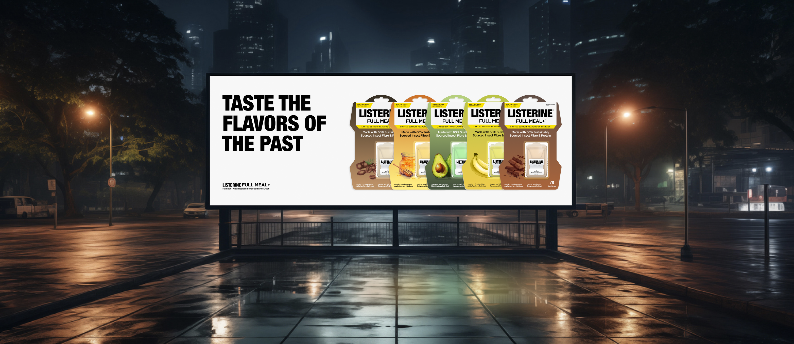
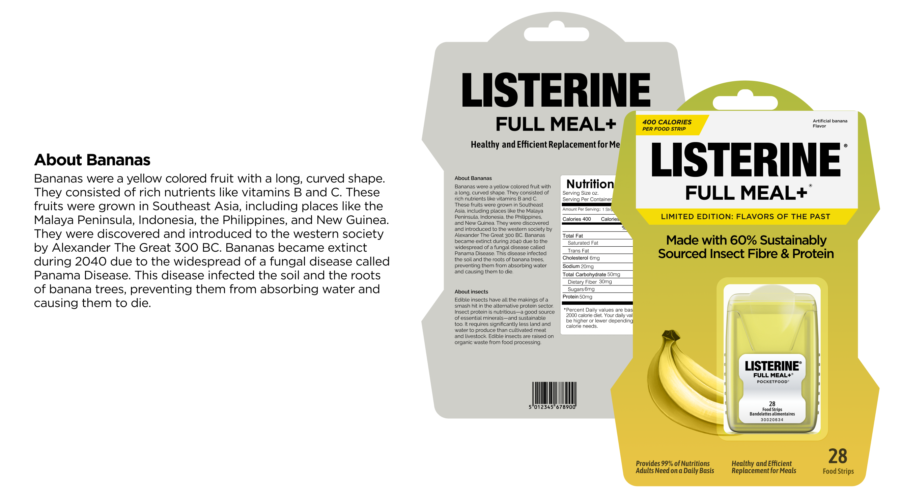
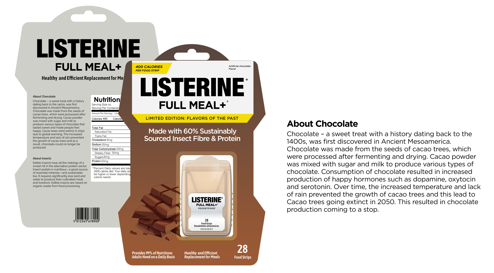
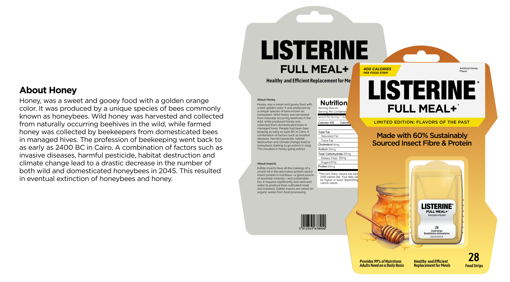
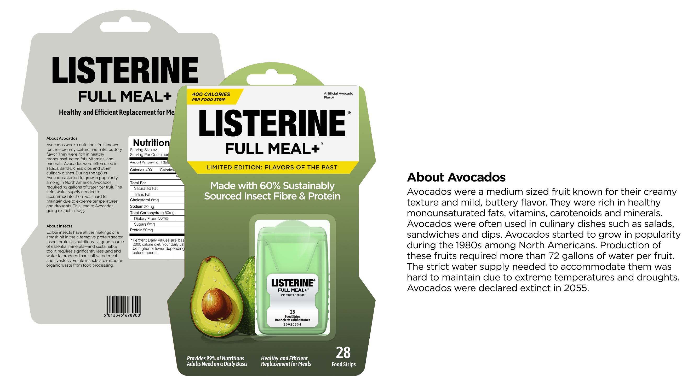
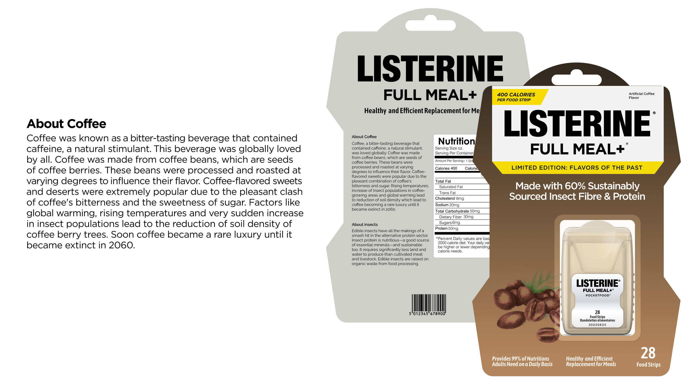

Listerine Full Meal +: a speculative design fiction
What happens when the food industry collapses and a mouthwash brand fills the gap? This project imagines a near-future where crop extinction and food scarcity have reshaped what we eat, and who makes it. Listerine Full Meal + is a fictional insect-based meal replacement strip, sold in limited-edition flavors that evoke the tastes of foods that no longer exist by 2050. My contributions: concept ideation, art direction, visual design, product mockups, and copywriting.

Caption. All five Listerine Full Meal + flavors, with the campaign tagline "Taste the Flavors of the Past."
The brief & research
An open brief, pointed at a near-future food crisis
We were given a deliberately open brief: design a speculative fiction that engages critically with the future. No defined problem, no defined solution, just a direction to feel real rather than sci-fi fantasy. After brainstorming across AI governance, climate migration, and urban infrastructure, food scarcity became our focus, agricultural research shows a growing number of crops face real extinction risk this century, while insects, already eaten by 2 billion people globally, remain culturally marginal in Western markets.
The insight that anchored our concept: if scarcity gets severe enough, brands from adjacent industries will pivot into food. It's already happening at the edges, energy drinks rebranding as nutrition, wellness companies launching meal replacements. We needed a brand that was ubiquitous, trusted, and categorically not food. Listerine's dissolving-strip format made it a natural vessel, and its clinical associations added an unsettling edge: nutrition as hygiene product, sustenance stripped of pleasure.
Design concept
Diegetic prototyping, a product from a coherent, wrong future
The design strategy was diegetic prototyping, creating an artifact that exists fully within the world it imagines, as if it were a real product from that future. That meant designing not just the packaging, but the advertising system around it: the billboard, the in-store display, the promotional posters. Each piece of collateral had to feel like it came from a coherent future marketing department, not a design school project.
We designed five limited-edition flavors, banana, chocolate, honey, avocado, and coffee, chosen specifically because all five face documented extinction risk from disease, climate change, or monoculture fragility. Calling them "Flavors of the Past" turned the product into an act of mourning. You're not just eating a meal replacement; you're consuming a memory of something that no longer exists. The tagline, Taste the Flavors of the Past, does double work: it's both an advertising hook and an ecological obituary.
My primary contribution was the art direction and visual design. I kept the original Listerine color system, the clinical greens, whites, and blues, but adapted it for each flavor using muted, desaturated tones that evoke preservation and loss rather than appetite. The typography stayed deliberately corporate and legible. I wanted it to feel like something you'd actually see on a supermarket shelf, not a dystopian prop, but a plausible product from a slightly wrong future.
The world
A credible corporate pivot, staged in a believable 2050
In the world we imagined, supermarkets still exist, but their shelves look different. Fresh produce sections are gone or sparse. Packaged meal replacements, nutrient strips, and lab-grown proteins have taken their place. Listerine Full Meal + is sold in the same aisle as vitamins and protein supplements, not in the snack section.
The non-food-to-food brand pivot felt important to ground in plausibility. We imagined Listerine's parent company Kenvue acquiring food-tech IP in the 2030s, repositioning the brand as a "total wellness" solution, sustenance and oral care from one trusted product. The in-store display and billboard were designed to show this positioning: clinical, responsible, optimistic about a grim situation.

Caption. In-store display advertisement, positioned in the supplements aisle of a 2050 supermarket.

Caption. Billboard advertisement campaign, all five flavors, positioned as a "total wellness" solution.
The five flavors
Evocative, not appetizing
Each poster follows the same format, the flavor name, a note on its extinction risk, and the tagline, so the visual system coheres as a campaign rather than five separate pieces. The color palette for each flavor is deliberately restrained: evocative, not appetizing.





Reflection
From amusement to discomfort, what speculative design is for
The most memorable part was presenting in class and watching reactions shift. Laughter first, at the absurdity of Listerine as food, then something quieter as people read each flavor's extinction note and realized it was about something that might actually disappear. That shift from amusement to discomfort is exactly what speculative design is supposed to do.
This project reframed what design can be for. I'd spent years thinking about design as problem-solving, find the friction, propose a fix. Here there was no user complaint to solve, just something invisible and slow-moving. Design became a way to make it felt, not just understood, a distinction I still return to: there's a difference between making something easier to use and making something impossible to ignore.

Caption. Classmates examining the Listerine Full Meal + posters during a class critique.